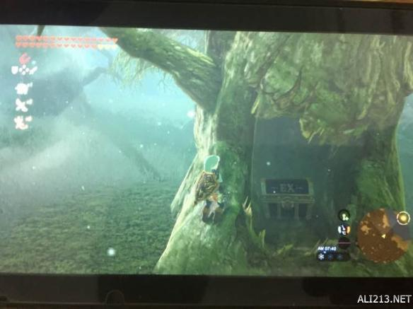
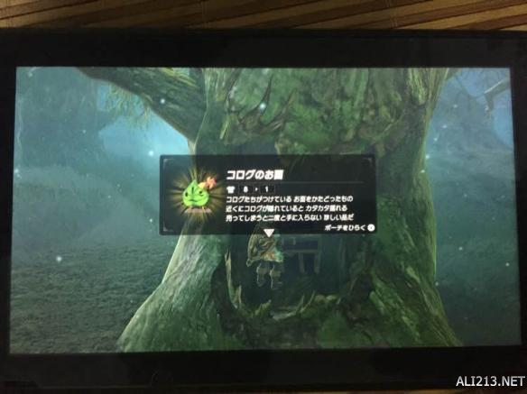
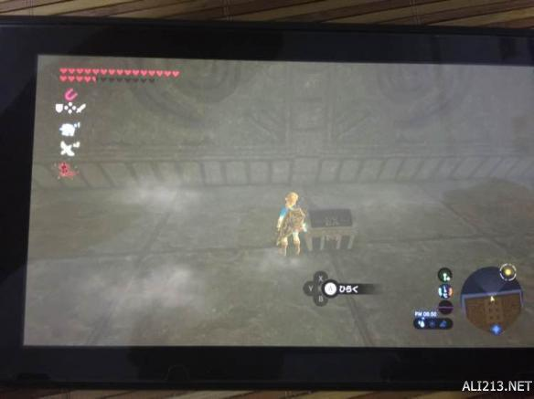
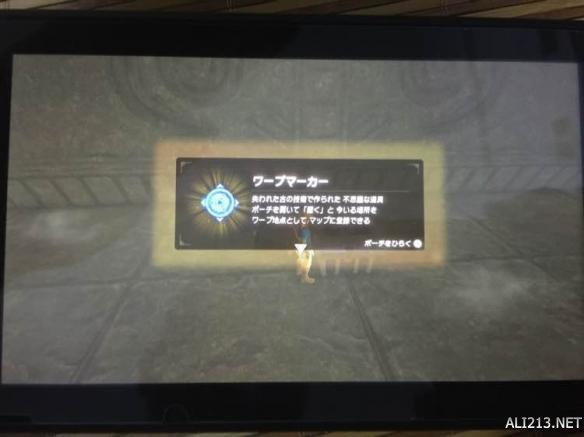

塞尔达传说荒野之息dlc已经更新，同时添加了传送装置和呀哈哈头，有些玩家找不到具体的位置，小编这里给大家带来了“灰熊_”分享的呀哈哈头位置和传说装置位置介绍，一起来看下吧。。
DLC呀哈哈头及传说装置地点介绍
1.呀哈哈头是在驿站读了桌上笔记提示在迷失之森某个树嘴巴里。
我是开着 宝藏 雷达，从里面入口往外走，具体地点如图。
2.传送装置提示是在东北右上角迷宫，就是当初拿带守护着属性皇冠的地方。传送回祠堂，然后下去拿。




塞尔达传说荒野之息DLC呀哈哈头及传说装置地点介绍到此，还没找到的小伙伴们赶紧去找找看吧。